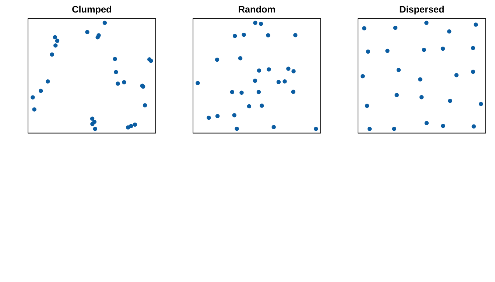
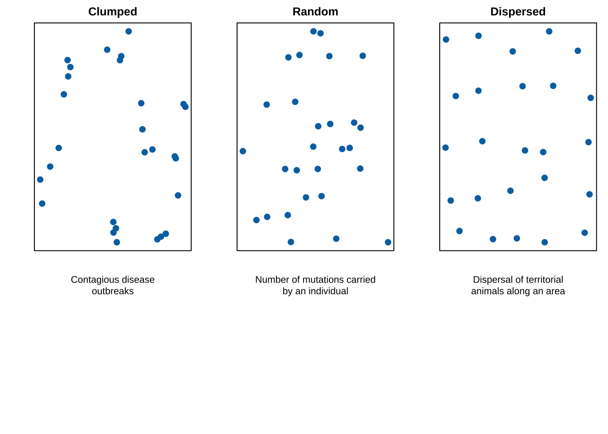
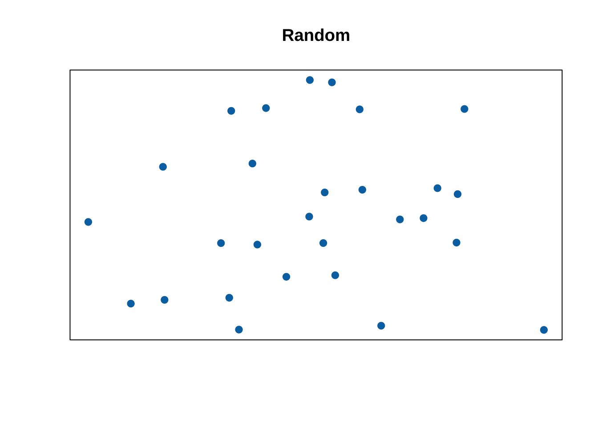
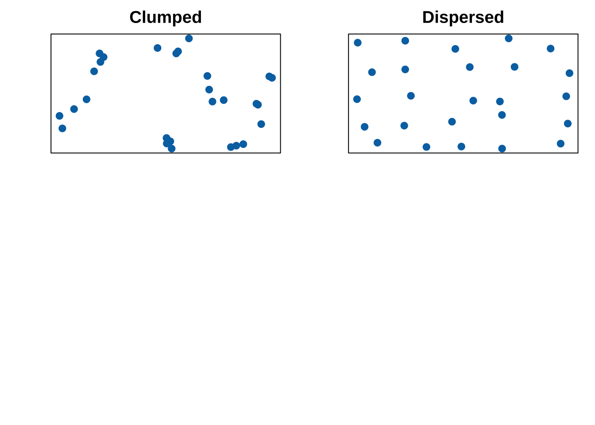
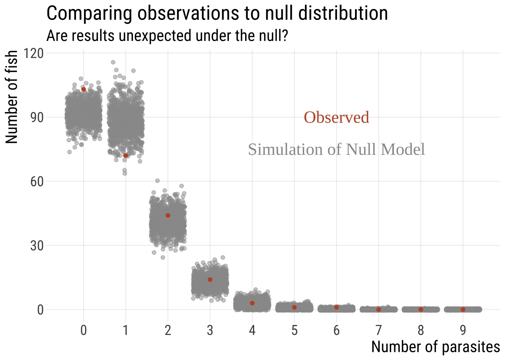
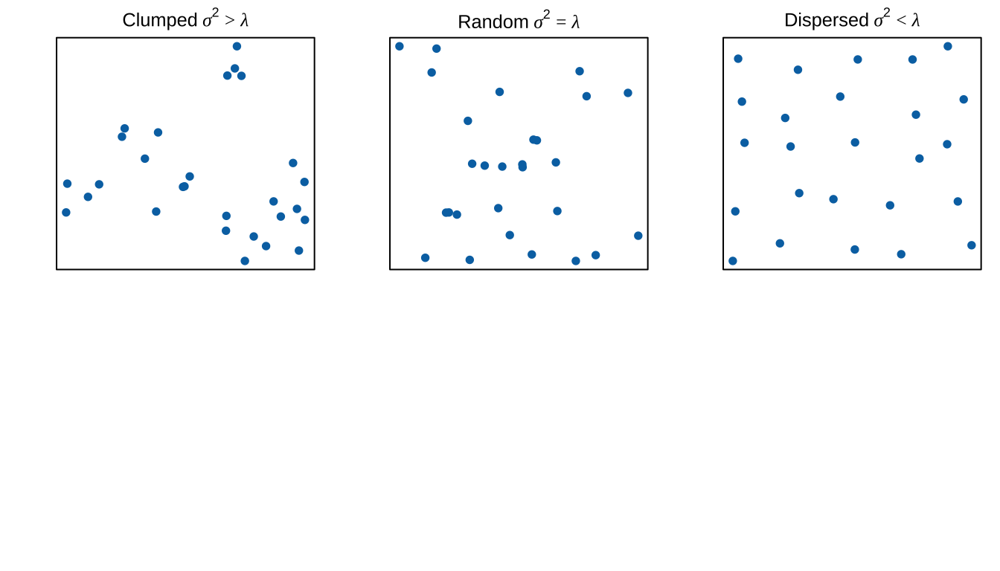

{kind=link}

7.2.Goodness-of-fit tests
Poisson distribution
Keywords
Poisson distribution
Outline
•Goodness-of-fit tests
•The proportional model
•The \(\chi^2\) distribution
•Degrees of freedom
•The \(\chi^2\) test
•Using \(\chi^2\) to test if data are distributed according to a Poisson distribution
Recap: Goodness of Fit Tests
Does data come from a given distribution with specified parameters?
Using the \(\chi^2\) statistic to test if data are Poisson distributed !
Why Poisson? (1/2)
We often want to know if events independent in time/space. E.g.:
- Are some people lucky? ☘️
- Do baseball players go on streaks? ⚾
- Do cats stick together, or avoid one another? 🐯
Perhaps we can use real data and contrast it to expectations under a null model and test. What might that distribution look like?
Why Poisson? (2/2)
Assuming events are independent the Poisson distribution, the Poisson describes the expected probability of \(X\) of events (successes) in a block of time or space.
Poisson experiments (1/3)
Random Events in Time or Space
The number of successes in the experiment can be counted (discrete).
The mean number of events (successes) that occurs during a specific interval of time (or space) is known.
Each outcome is independent.
The probability that a success will occur is proportional to the size of the interval.
Poisson experiments (2/3)
Random Events in Time or Space
Example: Number of births per hour in a given hospital
The number of successes in the experiment can be counted (discrete).

The mean number of successes that occurs during a specific interval of time (or space) is known.
Each outcome is independent.
The probability that a success will occur is proportional to the size of the interval.
The Poisson distribution (1/)
Formally: a mathematical description of the probability of \(X\) successful outcomes when:
the number of attempts, \(n\), is high
the probability of success for each attempt, \(p\), is low and determined through a random process
the probability of each attempt, \(p\), is independent of prior success or failure
Remember: a discrete probability distribution (can only take values in the range 0,1,2,…
The Poisson distribution (2/)
The Poisson distribution describes the expected probability of \(X\) independent events in time/space.
The Poisson distribution (4/)
The Poisson distribution describes the expected probability of \(X\) independent events in time/space.

The Poisson Equation
Assuming events are random and independent, the probability of observing \(X\) events in a block of time or space equals:
\[\Huge{Pr[X] =\frac{e^{-\lambda} \lambda^{X}}{X!}}\]
\(X\): Number of successes
\(P[X]\): probability of occurrence of \(X\) successes in one trial
\(\lambda\) (or \(\mu\)): the expected (mean) number of events in a block.
\(e\) is the base of \(ln()\), aka Euler’s number (a constant,
exp(1)in R).
Note: Many people use \(\mu\) in place of \(\lambda\)
Poisson: Fish Example (1/) 🐟

Parasites are a major force in human health, as well as evolution, ecology, and agronomy, animal husbandry.
Shaw et al. asked if the distribution of parasites or across individual Shad fish was random, or if some have an exceptional parasite burden? Here are their data:
| num_parasites | num_fish |
|---|---|
| 0 | 103 |
| 1 | 72 |
| 2 | 44 |
| 3 | 14 |
| 4 | 3 |
| 5 | 1 |
| 6 | 1 |
| 7 | 0 |
| 8 | 0 |
| 9 | 0 |
Shaw et al. 1998. Parasitology 117: 567 - 610.
Poisson: Fish Example (2/) 🐟
\(H_0\): Parasites are placed randomly on fish in a population i.e. parasite numbers follow a Poisson Distribution.

Poisson: Fish Example (3/) 🐟
\(H_A\): Parasites are not placed randomly on fish in a population i.e. parasite numbers do not follow a Poisson Distribution.

Steps in Hypothesis Testing
State hypothesesFind expectations (via simulation or via model)
| num_parasites | num_fish |
|---|---|
| 0 | 103 |
| 1 | 72 |
| 2 | 44 |
| 3 | 14 |
| 4 | 3 |
| 5 | 1 |
| 6 | 1 |
| 7 | 0 |
| 8 | 0 |
| 9 | 0 |
| total_fish | total_parasites |
|---|---|
| 238 | 225 |
Option 1: A Lousy Simulation (1/) 🐟
We can put 225 on 238 fish many times to generate a null.
-
Take 225 parasites and:
randomly place one parasite in one of 238 fish
repeat for each parasite
the same fish can be the target more than once
. . .
- At the end, count the number of parasites in each fish
. . .
- Repeat this many, many times
Option 1: A Lousy Simulation (2/) 🐟
## `summarise()` has regrouped the output.
## `summarise()` has regrouped the output.
## ℹ Summaries were computed grouped by replicate and x.
## ℹ Output is grouped by replicate.
## ℹ Use `summarise(.groups = "drop_last")` to silence this message.
## ℹ Use `summarise(.by = c(replicate, x))` for per-operation grouping
## (`?dplyr::dplyr_by`) instead.
Option 2: Derived by formula 🐟
\(P[X]=\frac{e^{-\lambda}\lambda^X}{X!}\)
\(e=2.718282\)
\(\lambda = \frac{tot.paras}{tot.fish}=225/238\)
Let’s try the first row:
\(X=0\)
\(P[0]=\frac{e^{-0.945}\times 0.945^0}{0!}\approx 0.388\)
\(\text{\# fish expected}=0.388\times 238=92.5\)
Repeat for each row…
Option 2: Derived by formula 🐟
| num_parasites | num_fish | expect |
|---|---|---|
| 0 | 103 | 92.471 |
| 1 | 72 | 87.420 |
| 2 | 44 | 41.322 |
| 3 | 14 | 13.022 |
| 4 | 3 | 3.078 |
| 5 | 1 | 0.582 |
| 6 | 1 | 0.092 |
| 7 | 0 | 0.012 |
| 8 | 0 | 0.001 |
| 9 | 0 | 0.000 |
| total_fish | total_parasites |
|---|---|
| 238 | 225 |
Proceed with testing?
-
Find degrees of freedom
df = # categories - 1 - # params estimated
Do we meet \(\chi^2\) assumptions?
- No expected values \(< 1\) &
- No more than 20% of expected values \(< 5\).
If yes, go on. If no, brainstorm.
| num_parasites | num_fish | expect |
|---|---|---|
| 0 | 103 | 92.471 |
| 1 | 72 | 87.420 |
| 2 | 44 | 41.322 |
| 3 | 14 | 13.022 |
| 4 | 3 | 3.078 |
| 5 | 1 | 0.582 |
| 6 | 1 | 0.092 |
| 7 | 0 | 0.012 |
| 8 | 0 | 0.001 |
| 9 | 0 | 0.000 |
| total_fish | total_parasites |
|---|---|
| 238 | 225 |
We do not meet assumptions, now what?
Options:
Go on despite this: if test is robust to violations. (I don’t support this option!)
Combine categories: if biologically sensible.
Find a more appropriate test.
Bypass traditional tests by using simulations (which we’ve done)
We can combine 4+ to meet assumptions
| num_parasites | num_fish | tot.fish | tot.parasite | mu | expect | sq_dev |
|---|---|---|---|---|---|---|
| 0 | 103 | 238 | 225 | 0.945 | 92.47 | 1.20 |
| 1 | 72 | 238 | 225 | 0.945 | 87.42 | 2.72 |
| 2 | 44 | 238 | 225 | 0.945 | 41.32 | 0.17 |
| 3 | 14 | 238 | 225 | 0.945 | 13.02 | 0.07 |
| 4+ | 5 | 238 | 225 | 0.945 | 3.77 | 0.40 |
\(\chi^ 2= 1.20 + 2.72 + 0.17 + 0.07 + 0.40 = 4.56\)
Hypothesis test
df = # categories - 1 - # params estimated = 5 - 1 - 1 = 3
Old fashioned moment
\(df=3; \chi^2 = 4.56\)
| df | a | 0.1 | 0.05 | 10^-2 | 10^-3 | 10^-4 | 10^-5 | 10^-6 | 10^-7 |
|---|---|---|---|---|---|---|---|---|
| 1 | 2.71 | 3.84 | 6.63 | 10.8 | 15.1 | 19.5 | 23.9 | 28.4 |
| 2 | 4.61 | 5.99 | 9.21 | 13.8 | 18.4 | 23.0 | 27.6 | 32.2 |
| 3 | 6.25 | 7.81 | 11.34 | 16.3 | 21.1 | 25.9 | 30.7 | 35.4 |
Assuming \(\alpha=0.05\), we fail to reject the NULL hypothesis (\(P>\alpha\)). We cannot exclude the idea that parasites are distributed at random across fish.
Are counts over or underdispersed
Over or underdispersed
A particular feature of the Poisson distribution is that the variance equals the mean.
Sample counts therefore vary more as the mean increases.
If the variance greatly exceeds the mean events are clumped
If the variance is much less than the mean events are dispersed.

Goodness of fit: Key points (1/)
- A test of \(\chi^2\) goodness of fit compares the frequency distribution of a discrete or categorical variable with the frequencies expected from a probability model.
- The test can be applied to many distributions
- More general than the binomial test because it can handle more than two categories.
- Goodness of fit is measured with the \(\chi^2\) test statistic. Its theoretical distribution is continuous. Probability is measured by the area under the curve.
- The \(\chi^2\) distribution predicts the deviation of count data from expectations under \(H_0\).
Goodness of fit: Key points (2/)
• Proportional probability model: events fall in different categories in proportion to the number of opportunities. • The Poisson distribution model: describes the frequency distribution of successes in blocks of time or space when successes happen independently and with equal probability over time or space.